LIV 클리닉 관리자 시스템 사용 설명서
이 문서는 LIV 성형외과 관리자 시스템의 모든 기능을 설명합니다. 신규 직원 교육, 업무 참고용으로 활용하세요.
접속 정보
- URL:
https://livps.co.kr/admin - 인증 방식: 이메일 + 비밀번호 (Supabase Auth)
- 권장 브라우저: Chrome, Edge (최신 버전)
- 로그인 후 자동으로 대시보드로 이동합니다.
전체 메뉴 구조
🔒 로그인
/admin/login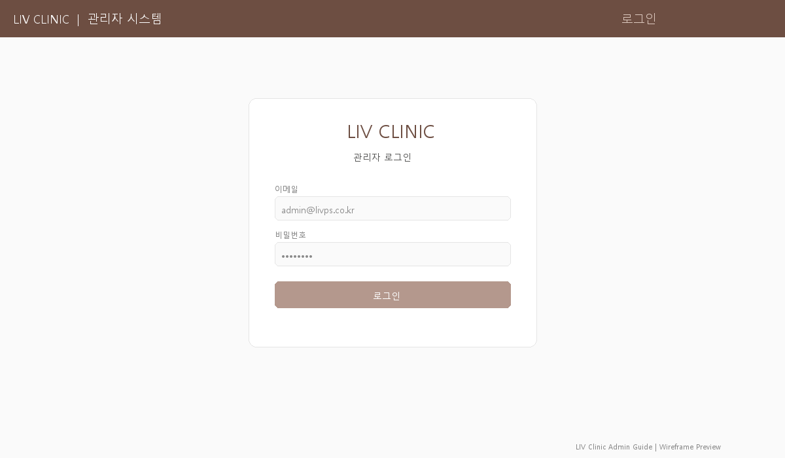
로그인 절차
| 단계 | 설명 |
|---|---|
| 1. 접속 | /admin으로 접속하면 자동으로 로그인 페이지로 이동합니다. |
| 2. 이메일 입력 | 관리자 계정 이메일을 입력합니다. |
| 3. 비밀번호 입력 | 비밀번호를 입력합니다. |
| 4. 로그인 | 로그인 버튼을 클릭하면 대시보드로 이동합니다. |
비밀번호 분실 시
시스템 관리자에게 문의하여 비밀번호를 재설정 받으세요.
📊 대시보드
/admin/dashboard병원 운영 전체 현황을 한눈에 파악할 수 있는 메인 화면입니다. 매일 아침 가장 먼저 확인하세요.
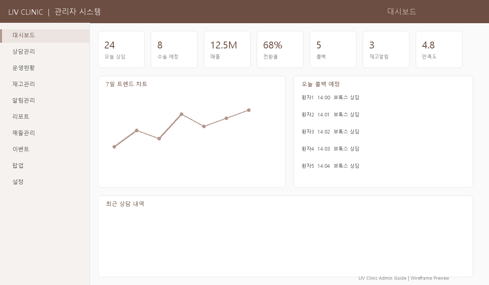
주요 기능
| 기능 | 설명 | 활용 시점 |
|---|---|---|
| 7개 KPI 카드 | 오늘 상담, 콜백 예정, 운영 건수, 월간 상담, 미발송 알림, 활성 이벤트, 활성 팝업 | 출근 시 첫 화면 |
| 7일 트렌드 차트 | 최근 7일간 상담/시술 추이를 바 차트로 시각화 | 주간 동향 파악 |
| 알림 배너 | 미발송 알림이 있을 때 상단에 경고 표시 | 즉시 처리 필요 |
| 주간 요약 | 이번 주 통계 요약 | 주간 미팅 자료 |
| 오늘의 콜백 | 오늘 콜백 예정인 환자 목록 | 업무 우선순위 |
| 최근 상담 5건 | 가장 최근 접수된 상담 | 신규 상담 빠른 확인 |
사용 시나리오
시나리오 1: 출근 후 아침 업무 시작
시나리오 2: 알림 배너가 표시될 때
- 상단에 경고 배너가 표시됩니다 (예: "미발송 알림 5건이 있습니다").
- 배너를 클릭하거나 알림관리로 이동합니다.
- 미처리 건을 순서대로 발송/스킵 처리합니다.
- 모두 처리하면 대시보드의 배너가 사라집니다.
시나리오 3: 병원 전체 상황을 경영진에게 빠르게 보고
- 대시보드 화면을 그대로 보여주거나 캡처합니다.
- 7개 KPI 카드로 핵심 수치를 한눈에 전달합니다.
- 7일 트렌드 차트로 최근 추이를 설명합니다.
- 더 상세한 분석이 필요하면 리포트에서 CSV를 내보냅니다.
시나리오 4: 주간 미팅 준비
- 대시보드의 주간 요약 통계를 확인합니다.
- 이번 주 상담 건수, 시술 건수, 전주 대비 추이를 파악합니다.
- 7일 트렌드에서 특이한 날(급증/급감)을 식별합니다.
- 최근 상담 5건에서 신규 유입 동향을 확인합니다.
- 활성 이벤트/팝업 수를 확인하여 마케팅 현황을 파악합니다.
이런 때 사용하세요
- 매일 아침: 오늘의 상담 건수와 콜백 예정을 확인합니다.
- 알림 배너가 보이면: 알림관리 페이지로 이동하여 미발송 건을 처리합니다.
- 트렌드 하락 시: 7일간 추이가 하락하면 이벤트 등록이나 마케팅 강화를 검토합니다.
💬 상담관리
/admin/consultations환자 상담 접수부터 완료까지 전체 파이프라인을 관리합니다. 상담사의 핵심 업무 도구입니다.
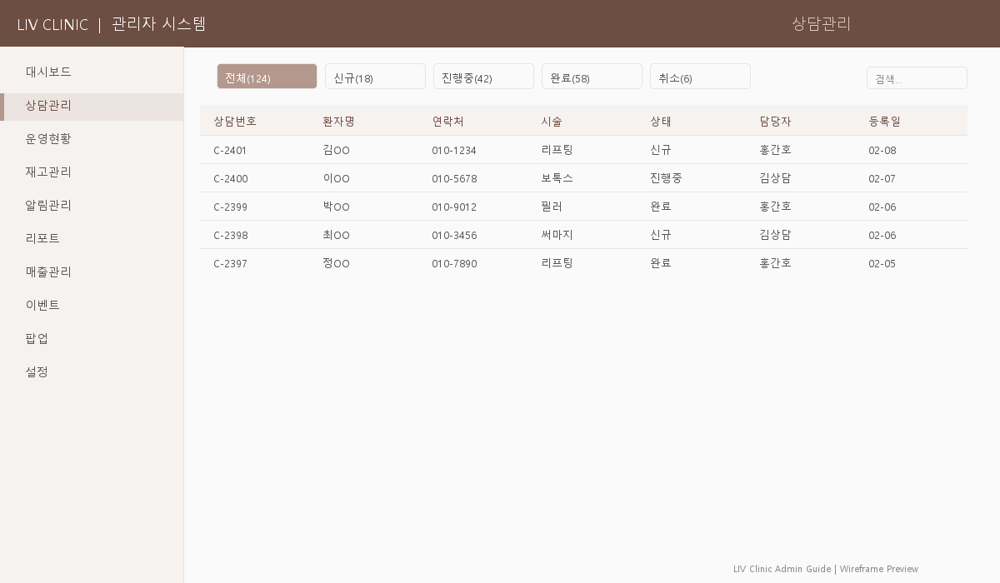
상담 상태 흐름
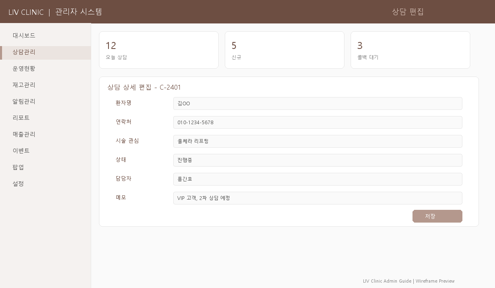
주요 기능
| 기능 | 설명 | 활용 시점 |
|---|---|---|
| 상태별 탭 | 전체/신규/콜백예정/부재중/재연락/예약/노쇼/완료/취소 (9개) | 업무별 분류 |
| 검색 | 이름 또는 전화번호로 검색 | 환자 빠른 조회 |
| 담당자 필터 | 특정 상담사에게 배정된 건만 보기 | 개인 업무 관리 |
| 오늘 콜백만 | 토글로 오늘 콜백 예정 건만 필터링 | 당일 우선 업무 |
| 벌크 액션 | 여러 건 선택 후 상태 일괄 변경, 담당자 일괄 배정 | 대량 처리 |
| 인라인 편집 | 담당자, 다음 연락일, 예산, 메모를 즉시 수정 | 빠른 업데이트 |
| 음성 메모 | 마이크 버튼으로 음성을 텍스트로 변환 (한국어 지원) | 전화 상담 중 |
| CSV 내보내기 | 현재 필터 기준으로 CSV 다운로드 | 보고서/분석 |
| 감사 로그 | 모든 변경 사항 자동 기록 | 이력 추적 |
| 페이지네이션 | 20건 단위 페이지 이동 | 대량 데이터 |
사용 시나리오
시나리오 1: 신규 상담 처리
- 신규 탭에서 새로 들어온 상담을 확인합니다.
- 담당자를 배정합니다 (인라인 편집으로 드롭다운 선택).
- 전화를 걸어 상담합니다.
- 상태를 콜백예정 또는 예약완료로 변경합니다.
- 다음 연락일을 설정합니다.
시나리오 2: 일일 콜백 처리
- 오늘 콜백만 보기 토글을 활성화합니다.
- 순서대로 전화하며 메모를 음성 입력합니다.
- 결과에 따라 상태를 업데이트합니다.
시나리오 3: 주간 보고 자료 만들기
- 원하는 기간과 상태로 필터를 적용합니다.
- CSV 내보내기로 데이터를 다운로드합니다.
- 상태별 건수를 리포트에 활용합니다.
시나리오 4: 전화 연결이 안 되는 환자 처리
- 해당 상담 건의 상태를 부재중(no_answer)으로 변경합니다.
- 메모에 "1차 전화 부재 (날짜/시간)" 을 기록합니다.
- 다음 연락일을 2~3일 후로 설정합니다.
- 2~3회 부재 시 상태를 재연락(re_contact)으로 변경하고 다른 시간대에 시도합니다.
- 최종적으로 연결 불가 시 취소(cancelled) 처리하고 메모에 사유를 남깁니다.
시나리오 5: 예약 환자가 노쇼(No-Show)한 경우
- 예약완료 상태에서 환자가 내원하지 않으면 상태를 노쇼(no_show)로 변경합니다.
- 메모에 노쇼 날짜와 예약 시술명을 기록합니다.
- 다음 날 전화하여 재예약 의사를 확인합니다.
- 재예약 원하면 콜백예정으로 변경, 취소 원하면 취소로 변경합니다.
시나리오 6: 대량 상담 건을 한번에 정리하기
- 처리할 상담 건들의 체크박스를 선택합니다 (또는 전체 선택).
- 상단의 벌크 액션 버튼을 클릭합니다.
- 상태 일괄 변경: 여러 건을 동일 상태로 일괄 변경 (예: 오래된 미연결 건을 모두 '취소'로).
- 담당자 일괄 배정: 새로 입사한 상담사에게 기존 건을 일괄 이관할 때 사용합니다.
시나리오 7: 환자가 특정 시술에 대해 문의할 때
- 검색에서 환자 이름 또는 전화번호를 입력하여 기존 상담 이력을 확인합니다.
- 이전 상담이 있으면 행을 클릭하여 상세 보기를 펼칩니다.
- 예산 범위, 이전 메모, 관심 시술 등을 확인합니다.
- 상담 내용을 메모에 추가하고 (음성 메모 가능), 상태를 적절히 업데이트합니다.
- 현재 진행 중 이벤트가 있으면 이벤트관리에서 확인 후 안내합니다.
시나리오 8: 담당자가 휴가/퇴사했을 때 상담 이관
- 담당자 필터에서 해당 직원을 선택하여 배정된 건을 확인합니다.
- 진행 중인 상담 건들의 체크박스를 모두 선택합니다.
- 벌크 액션 > 담당자 일괄 배정으로 새 담당자를 선택합니다.
- 메모에 "OOO님 휴가로 인한 이관 (날짜)" 기록을 남깁니다.
이런 때 사용하세요
- 새로운 상담 요청이 들어왔을 때 → 신규 탭 확인
- 오늘 전화해야 할 환자 목록이 필요할 때 → 오늘 콜백만 토글
- 여러 건을 한번에 처리할 때 → 벌크 액션 (체크박스 선택)
- 전화하면서 메모할 때 → 음성 메모 (마이크 버튼)
🏥 운영현황
/admin/operations당일 시술실 현황을 실시간으로 관리합니다. 플로어맵과 칸반 보드 두 가지 뷰를 제공합니다.
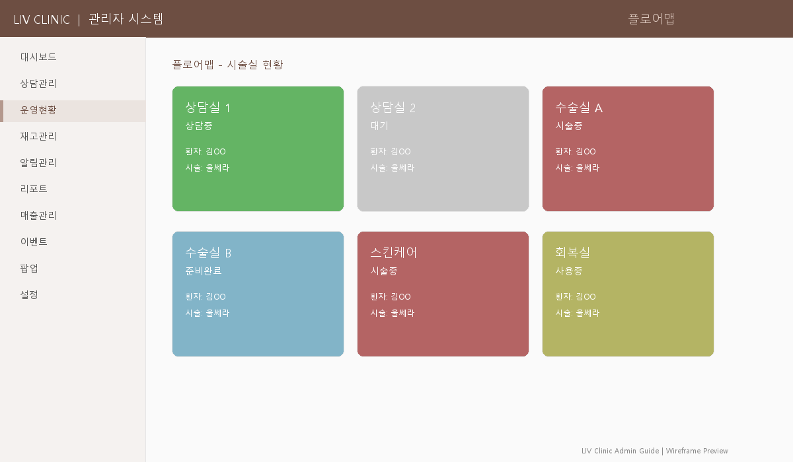
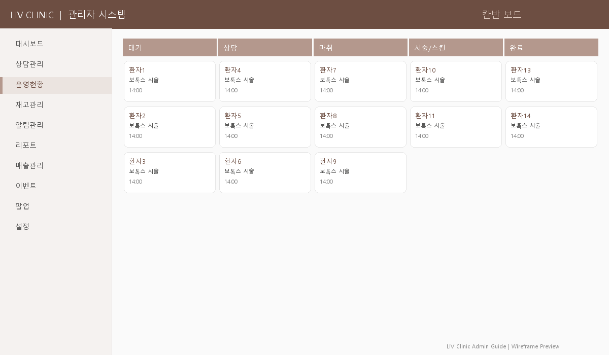
주요 기능
| 기능 | 설명 |
|---|---|
| 플로어맵 | 병원 평면도에서 각 룸 상태를 색상으로 시각화 (빈 방/사용 중/완료) |
| 칸반 보드 | 대기→상담→마취→시술/스킨케어→완료 5단계 칼럼 |
| 케이스 등록 | 환자명, 시술 유형, 담당의, 시술명, 소요시간 입력 |
| 상태 관리 | WAITING(대기) → IN_PROGRESS(진행중) → COMPLETED(완료) |
| 위치 추적 | LOUNGE(라운지) / ROOM(시술실) 위치 관리 |
| 자동 타이머 | 시술 시작 후 경과 시간 자동 표시 (30초마다 갱신) |
| 통계 카드 | 활성/대기/완료/전체 건수 실시간 표시 |
| 시술 유형 | 상담(CONSULT), 마취(ANESTHESIA), 시술(PROCEDURE), 스킨케어(SKINCARE) |
사용 시나리오
시나리오 1: 환자 동선 관리 (도착~완료)
- 환자 도착 → 케이스 등록 (대기 상태)
- 상담실 배정 → 위치: ROOM + 상태: 진행중
- 상담 완료 → 라운지로 이동
- 시술실 배정 → 시작 버튼 클릭
- 시술 완료 → 완료 버튼 클릭
시나리오 2: 한 환자가 여러 시술을 받는 경우
- 첫 번째 시술 케이스를 등록합니다 (예: 보톡스, 시술유형: PROCEDURE).
- 첫 번째 시술 완료 후 완료 처리합니다.
- 동일 환자로 두 번째 케이스를 등록합니다 (예: 스킨케어, 시술유형: SKINCARE).
- 각 시술이 별도 케이스로 관리되어 리포트에서 시술별 통계가 정확하게 집계됩니다.
시나리오 3: 시술 중 예상 시간을 초과한 경우
- 자동 타이머에서 경과 시간이 예상 소요시간을 넘긴 것을 확인합니다.
- 플로어맵에서 해당 룸을 클릭하여 상세 패널을 확인합니다.
- 담당 의료진에게 상황을 확인합니다.
- 필요 시 다음 환자 대기 시간 조정 또는 라운지 안내를 합니다.
- 메모에 지연 사유를 기록합니다.
시나리오 4: 환자가 시술 도중 취소/중단한 경우
시나리오 5: 오전 시작 시 당일 전체 일정 세팅
- 상담관리에서 오늘 예약완료 상태인 환자 목록을 확인합니다.
- 운영현황에서 예약된 환자들의 케이스를 미리 등록합니다 (대기 상태).
- 담당의, 시술명, 예상 소요시간을 입력합니다.
- 칸반 보드에서 대기 칼럼에 오늘 일정이 한눈에 보입니다.
- 환자 도착 순서대로 상태를 변경하며 진행합니다.
시나리오 6: 응급 상황 또는 비예약 환자 처리
- 예약 없이 방문한 환자도 케이스 등록으로 바로 등록합니다.
- 메모에 "워크인/비예약" 을 기록합니다.
- 빈 시술실을 플로어맵에서 확인하고 배정합니다.
- 시술 후 상담관리에도 해당 환자 정보를 소급 등록합니다.
이런 때 사용하세요
- 플로어맵: 전체 병원 현황을 빠르게 파악할 때
- 칸반 보드: 환자 흐름을 단계별로 관리할 때
- 경과 시간이 예상보다 길어지면 담당 의료진에게 확인
📦 재고관리
/admin/inventory시술 재료와 소모품의 재고를 추적하고 관리합니다. 3개 탭과 3가지 뷰 모드를 제공합니다.
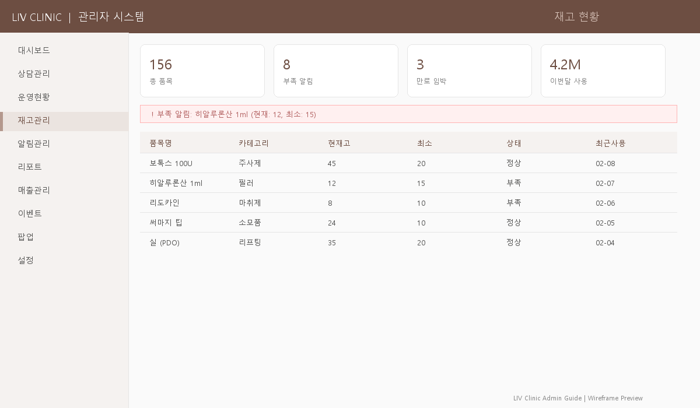
3개 탭
| 탭 | 설명 |
|---|---|
| 재고 현황 | 전체 재고 목록, 현재 수량, 상태 (정상/부족/소진) |
| 사용 이력 | 재고 입출고 기록 (날짜, 유형, 수량, 환자) |
| 입고 관리 | 재입고 처리 |
3가지 뷰 모드 (재고 현황 탭)
| 모드 | 설명 | 추천 상황 |
|---|---|---|
| 테이블 뷰 | 전통적인 표 형태 | 상세 정보 확인 |
| 카드 뷰 | 카드 그리드 레이아웃 | 시각적 빠른 스캔 |
| 그룹 뷰 | 카테고리별 그룹핑 | 카테고리 단위 관리 |
재고 상태 구분
| 상태 | 조건 | 의미 |
|---|---|---|
| 정상 | 현재 수량 > 최소 수량 | 문제 없음 |
| 부족 | 현재 수량 ≤ 최소 수량 | 발주 필요 |
| 소진 | 현재 수량 = 0 | 긴급 발주! |
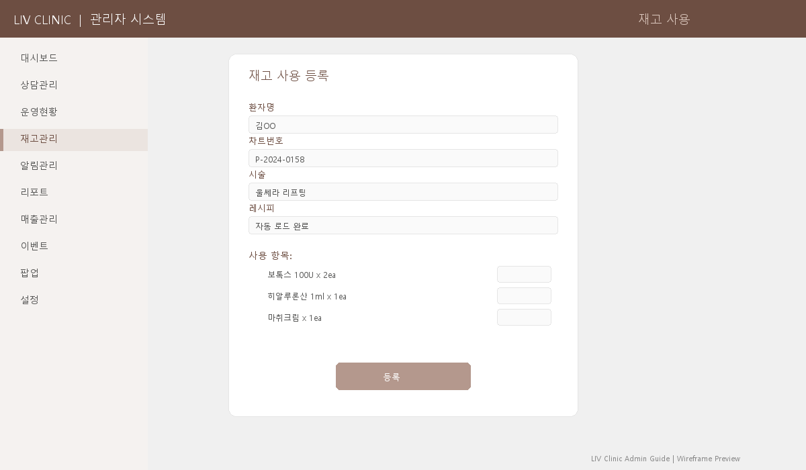
사용 시나리오
시나리오 1: 시술 전 재고 사용 등록
- 재고 사용 버튼을 클릭하여 모달을 엽니다.
- 환자명과 차트번호를 입력합니다.
- 시술을 선택하면 레시피가 자동으로 로드됩니다.
- 실제 사용량이 다르면 수량을 조정합니다.
- 간호사 확인 후 등록합니다.
시나리오 2: 재입고 처리
- 입고 관리 탭으로 이동합니다.
- 항목을 선택하고 입고 수량과 사유를 입력합니다.
- 재고가 자동으로 업데이트됩니다.
시나리오 3: 재고 부족 대응
- 상단 알림 배너에서 부족/소진 항목을 확인합니다.
- 공급업체에 발주합니다.
- 물품 도착 시 입고 처리합니다.
시나리오 4: 시술 중 예상보다 재료를 많이 사용한 경우
- 레시피로 자동 로드된 기본 수량 외에 추가 사용이 발생합니다.
- 재고 사용 모달에서 해당 항목의 수량을 실제 사용량으로 수정합니다.
- 또는 추가 항목을 직접 선택하여 수량을 입력합니다.
- 간호사 확인 후 등록하면 정확한 소모량이 기록됩니다.
- 이런 상황이 반복되면 설정 > 시술 마스터에서 해당 시술의 레시피를 업데이트하는 것이 좋습니다.
시나리오 5: 유통기한이 임박한 재고 확인
- 재고 현황 탭에서 각 항목의 보관 참고사항 필드를 확인합니다.
- 항목 클릭 → 상세 패널에서 최근 입고 날짜를 확인하여 유통기한을 역산합니다.
- 유통기한이 가까운 재료는 우선 사용하도록 의료진에게 공유합니다.
- 폐기가 필요하면 출고 처리 시 사유에 "유통기한 만료 폐기"를 입력합니다.
시나리오 6: 월말 재고 실사(Inventory Count)
- 그룹 뷰로 전환하여 카테고리별로 재고를 확인합니다.
- 실물 재고와 시스템 수량을 대조합니다.
- 차이가 있으면 입출고에서 사유와 함께 수량을 조정합니다 (예: "실사 조정 +2개").
- 대시보드 카드에서 전체/정상/부족/소진 항목 수를 최종 확인합니다.
시나리오 7: 신규 시술 재료를 처음 등록할 때
- 항목 추가 버튼을 클릭합니다.
- 재료명, 카테고리, 단위(개/ml/cc 등)를 입력합니다.
- 최소 수량을 설정합니다 (이 수량 이하가 되면 알림 배너가 표시됩니다).
- 현재 보유 수량, 단가, 공급업체 정보, 보관 참고사항을 입력합니다.
- 저장 후 설정 > 시술 마스터에서 해당 시술의 레시피에 이 재료를 추가합니다.
이런 때 사용하세요
- 시술 전 재료 준비 시 → 레시피 자동 로드로 빠르게 등록
- 알림 배너가 보이면 → 즉시 부족 항목 확인 및 발주
- 월말 재고 파악 → 그룹 뷰로 카테고리별 확인
🔔 알림관리
/admin/notifications시술 후 환자 팔로업 알림을 관리합니다. 카카오, SMS, 전화 채널을 지원합니다.
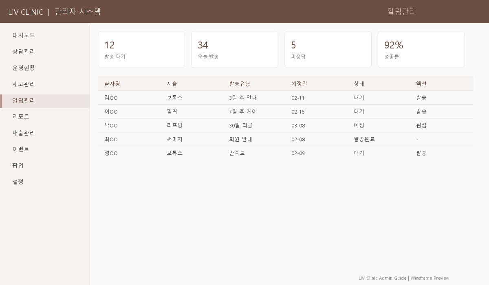
주요 기능
| 기능 | 설명 |
|---|---|
| KPI 카드 | 오늘 발송 대상, 미발송 건수, 이번 주 예정 |
| 알림 배너 | 미처리 알림 경고 |
| 발송 워크플로우 | 채널 선택(카카오/SMS/전화) → 담당자 확인 → 메모 → 발송/스킵 |
| 알림 템플릿 | 메시지 템플릿 관리 (CRUD) - /notifications/templates |
| 발송 이력 | 과거 발송 기록 조회 - /notifications/history |
사용 시나리오
시나리오 1: 시술 후 팔로업 처리
- 환자가 시술을 받으면 치료 기록을 등록합니다.
- 설정된 주기(예: 3일 후)에 알림이 대시보드에 나타납니다.
- 알림 대상 환자에게 카카오/SMS/전화로 연락합니다.
- 결과를 기록하고 발송완료 또는 스킵 처리합니다.
시나리오 2: 시술 당일 귀가 안내 발송
- 운영현황에서 시술 완료 처리된 환자를 확인합니다.
- 알림관리에서 해당 환자의 치료 기록을 등록합니다 (시술명, 시술일).
- 채널을 카카오로 선택합니다.
- 템플릿에서 "시술 후 주의사항 안내" 템플릿을 선택합니다.
- 발송 후 발송완료 처리합니다.
시나리오 3: 환자가 시술 후 이상 증상을 호소할 때
- 알림 발송 중 환자가 이상 증상을 호소하면 메모에 상세 내용을 기록합니다.
- 채널을 전화로 변경하고, 담당 의료진에게 즉시 연결합니다.
- 필요 시 재내원 예약을 상담관리에서 등록합니다.
- 메모에 의료진 확인 결과와 조치 내용을 기록합니다.
시나리오 4: 알림 템플릿 생성 및 활용
- 알림 템플릿 하위 페이지 (
/notifications/templates)로 이동합니다. - 새 템플릿을 생성합니다 (예: "리프팅 시술 3일차 경과 확인").
- 메시지 본문에 시술 후 주의사항과 확인 질문을 작성합니다.
- 저장 후, 알림 발송 시 해당 템플릿을 선택하면 메시지가 자동 입력됩니다.
- 시술 유형별로 템플릿을 준비해두면 업무가 빨라집니다.
시나리오 5: 미발송 알림이 쌓여 있을 때 일괄 처리
- KPI 카드에서 미발송 건수를 확인합니다.
- 오래된 알림(7일 이상 경과)은 스킵 처리하고, 메모에 사유를 기록합니다.
- 최근 알림은 순서대로 발송합니다.
- 향후 쌓이지 않도록 매일 오전 일과에 알림 처리를 포함합니다.
시나리오 6: 재방문 유도 알림 보내기
- 시술 후 2~4주가 경과한 환자에게 재방문 유도 알림을 보냅니다.
- 템플릿에서 "경과 확인 및 추가 상담 안내" 메시지를 선택합니다.
- 채널: 카카오 (가장 읽힐 확률이 높음) 또는 SMS를 선택합니다.
- 환자가 예약을 원하면 상담관리에서 예약완료로 등록합니다.
이런 때 사용하세요
- 매일 오전 미발송 건을 확인하고 처리하세요.
- 반복되는 메시지는 템플릿으로 등록하면 효율적입니다.
📈 리포트
/admin/reports월간 경영 분석과 성과 리포트를 제공합니다. 경영 회의 자료로 활용하세요.
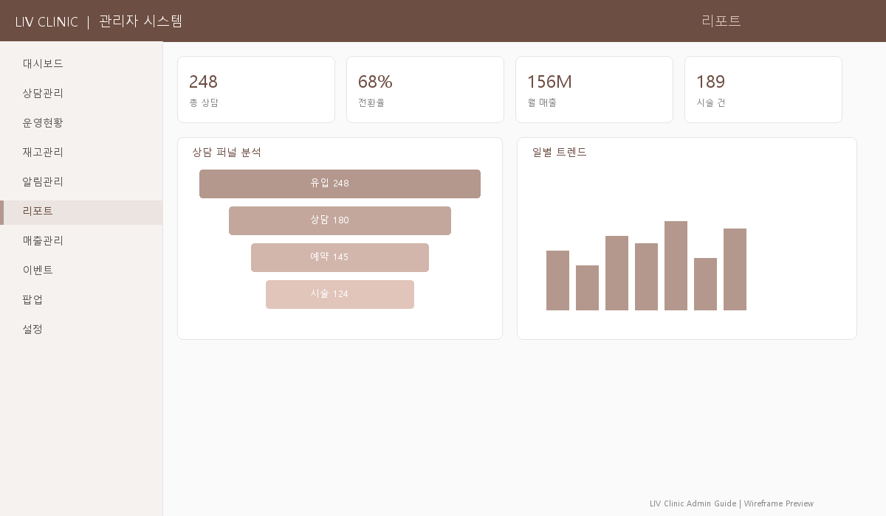
주요 기능
| 기능 | 설명 |
|---|---|
| 기간 선택 | 연도/월 드롭다운으로 조회 기간 설정 |
| 전월 비교 | 체크박스로 전월 대비 비교 활성화 |
| 4개 KPI 카드 | 월 매출(목표 달성률%), 전환율, 시술 건수, 건당 평균 + 전월 대비 증감% |
| 상담 퍼널 | 접수 → 연락 → 예약 → 완료 → 노쇼 단계별 분석 |
| 일별 트렌드 | 7일 바 차트 (상담 vs 시술) |
| 시술 통계 | 시술별 매출 순위 테이블 |
| 의사 성과 | 의사별 상담수, 시술수, 매출, 전환율 |
| CSV 내보내기 | KPI, 퍼널, 시술, 의사, 일별 데이터 통합 CSV |
사용 시나리오
시나리오 1: 월간 경영 회의 준비
- 해당 월을 선택합니다.
- 전월 비교 체크박스를 활성화하여 추이를 확인합니다.
- KPI 카드에서 목표 달성률을 확인합니다.
- 상담 퍼널에서 이탈 구간을 파악합니다.
- CSV를 내보내 회의 자료로 활용합니다.
시나리오 2: 상담 전환율이 낮을 때 원인 분석
- KPI 카드에서 전환율이 전월 대비 하락한 것을 확인합니다.
- 상담 퍼널에서 어느 단계에서 이탈이 많은지 파악합니다.
- 접수→연락 이탈이 높으면: 초기 응대 속도를 확인합니다 → 상담관리에서 신규 건의 처리 시간을 점검합니다.
- 연락→예약 이탈이 높으면: 상담 품질/가격 안내 방식을 검토합니다 → 진행 중 이벤트 활용 여부를 확인합니다.
- 예약→완료 이탈(노쇼)이 높으면: 예약 리마인드 알림 발송을 강화합니다.
- 의사 성과 섹션에서 의사별 전환율 차이를 확인하여 교육/개선 방안을 도출합니다.
시나리오 3: 인기 시술/비인기 시술 파악
- 시술 통계 테이블에서 매출 순위를 확인합니다.
- 상위 시술: 마케팅 강화, 재고 충분히 확보, 이벤트 기획 검토.
- 하위 시술: 원인 분석 (가격? 인지도? 계절성?) → 할인 이벤트 또는 홈페이지 노출 강화를 고려합니다.
- 이벤트관리에서 하위 시술 대상 프로모션을 기획합니다.
시나리오 4: 분기/반기 성과 추이 분석
- 3개월 또는 6개월 분의 리포트를 각각 조회합니다.
- 각 월의 CSV를 내보냅니다.
- 엑셀에서 월별 KPI를 합산/비교하여 분기 추이를 분석합니다.
- 성수기/비수기 패턴을 파악하여 다음 분기 전략을 수립합니다.
이런 때 사용하세요
- 월간 경영 회의 전에 CSV를 미리 준비하세요.
- 상담 퍼널에서 이탈이 많은 단계를 찾아 개선 방안을 논의하세요.
- 목표 매출은 설정 > 기본정보에서 설정합니다.
💰 매출관리
/admin/revenue일별/주별/월별 매출을 추적하고 결제를 관리합니다.
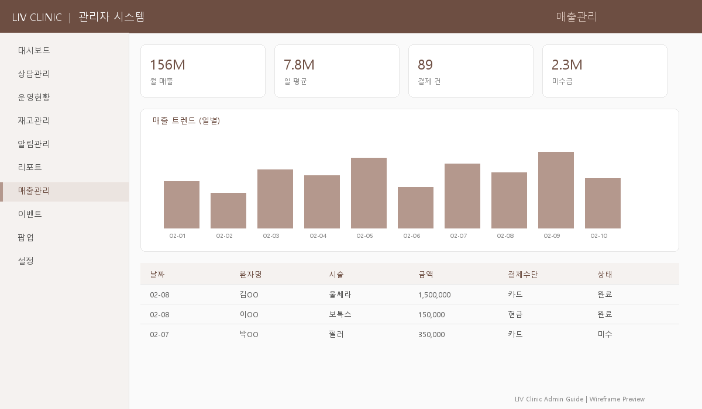
주요 기능
| 기능 | 설명 |
|---|---|
| 기간 토글 | 오늘 / 이번 주 / 이번 달 |
| 4개 KPI 카드 | 당일 매출, 주간 매출, 월간 매출, 건당 평균 |
| 7일 매출 트렌드 | 바 차트로 일별 매출 시각화 |
| 결제 상태 탭 | 전체 / 완료 / 대기 / 환불 |
| 거래 테이블 | 날짜, 환자명, 시술, 금액, 할인, 순금액, 결제방법, 상태 |
| 인라인 결제 | 대기 건에 결제금액 + 결제방법 입력 후 확인 |
| 환불 처리 | 완료된 결제에 환불 버튼 |
| CSV 내보내기 | 거래 내역 다운로드 |
결제 상태 흐름
사용 시나리오
시나리오 1: 당일 매출 정산
- 오늘 탭을 선택합니다.
- 대기 상태 탭에서 미결제 건을 확인합니다.
- 결제 금액과 방법(카드/현금/계좌이체)을 입력하고 확인합니다.
- 하루 마감 시 CSV를 내보내 정산합니다.
시나리오 2: 환자가 할인을 받는 경우
- 거래 테이블에서 해당 환자의 시술 건을 찾습니다.
- 인라인 결제 영역에서 할인 금액을 입력합니다 (예: 이벤트 할인 10만원).
- 순금액이 자동으로 계산됩니다 (원래 금액 - 할인).
- 결제 방법을 선택하고 결제를 확인합니다.
- 리포트에서 할인 전/후 금액이 별도로 집계됩니다.
시나리오 3: 환불 처리가 필요한 경우
- 완료 상태 탭에서 환불 대상 건을 찾습니다.
- 환자명 또는 날짜로 검색하면 빠르게 찾을 수 있습니다.
- 해당 건의 환불 버튼을 클릭합니다.
- 확인 다이얼로그에서 환불을 최종 확인합니다.
- 상태가 환불(refunded)로 변경되고 매출에서 차감됩니다.
주의
환불 처리는 되돌릴 수 없습니다. 반드시 원장/실장의 승인을 받은 후 진행하세요.
시나리오 4: 분할 결제 (카드 + 현금)
- 환자가 카드 50만원 + 현금 30만원으로 분할 결제를 요청합니다.
- 첫 번째 결제: 금액 50만원, 방법 카드로 결제 처리합니다.
- 메모에 "분할결제 1/2, 카드 50만원" 을 기록합니다.
- 두 번째 결제는 별도 건으로 처리하거나, 메모에 "현금 30만원 수령" 을 기록합니다.
시나리오 5: 주간/월간 매출 추이 확인
- 이번 주 또는 이번 달 탭으로 전환합니다.
- 7일 매출 트렌드 차트에서 일별 매출 패턴을 확인합니다.
- 특정 요일에 매출이 낮으면 해당 요일 마케팅 강화를 검토합니다.
- 4개 KPI 카드에서 당일/주간/월간 매출을 한눈에 비교합니다.
- 더 상세한 분석이 필요하면 리포트로 이동합니다.
환불 시 주의사항
환불 처리는 되돌릴 수 없습니다. 환불 전 반드시 확인하세요.
🎉 이벤트관리
/admin/events홈페이지에 노출되는 프로모션과 이벤트를 관리합니다.
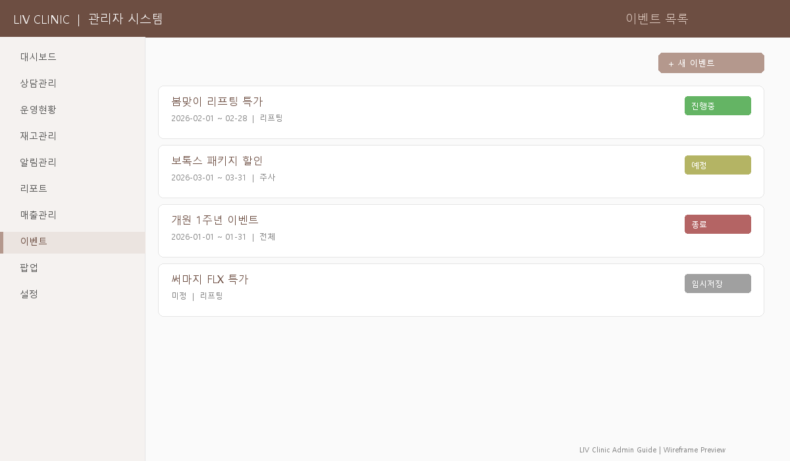
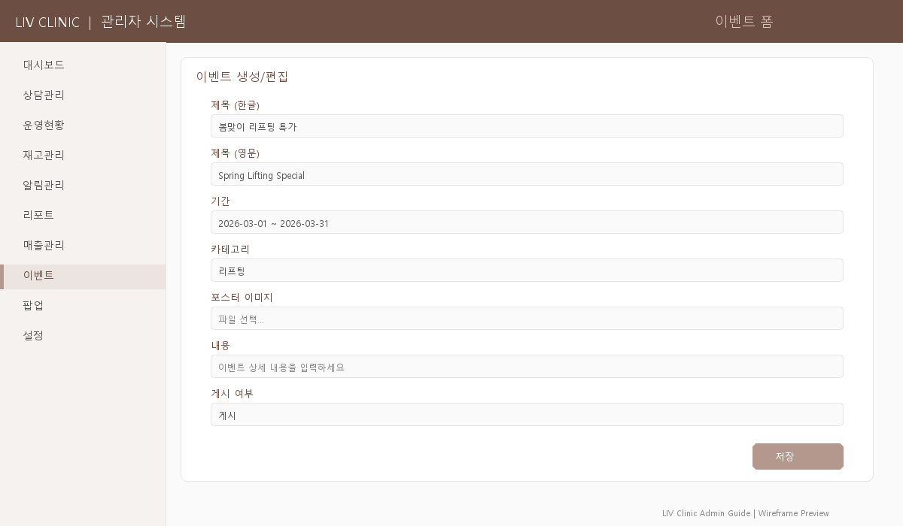
주요 기능
| 기능 | 설명 |
|---|---|
| 이벤트 목록 | 검색 가능한 이벤트 카드 리스트 |
| 상태 배지 | 진행중 종료 초안 |
| 이벤트 생성 | 제목(한/영), 기간, 카테고리, 포스터 이미지, 내용, 게시 여부 |
| 복제 | 기존 이벤트를 복제하여 새 이벤트 빠르게 생성 |
| 편집/삭제 | 확인 다이얼로그 후 삭제 (즉시 홈페이지 반영) |
| 다국어 | 한국어/영어 제목 및 내용 |
| 주요(Featured) | 홈페이지 메인에 노출되는 주요 이벤트 지정 |
사용 시나리오
시나리오 1: 신규 이벤트 등록
- 새 이벤트 버튼을 클릭합니다.
- 한국어/영어 제목을 입력합니다.
- 시작일/종료일을 설정합니다.
- 카테고리를 선택합니다.
- 포스터 이미지를 업로드합니다.
- 내용을 작성합니다.
- 게시 체크박스를 활성화하고 저장합니다.
- 홈페이지에 즉시 반영됩니다.
시나리오 2: 이벤트 기간 연장
- 이벤트 목록에서 해당 이벤트의 편집 버튼을 클릭합니다.
- 종료일을 새로운 날짜로 변경합니다.
- 필요하면 내용에 "기간 연장!" 문구를 추가합니다.
- 저장하면 홈페이지에 즉시 반영됩니다.
- 상태 배지가 진행중으로 유지됩니다.
시나리오 3: 지난 이벤트를 참고하여 새 이벤트 만들기
- 이벤트 목록에서 참고할 이전 이벤트를 찾습니다.
- 복제 버튼을 클릭합니다.
- 제목, 기간, 내용을 새 이벤트에 맞게 수정합니다.
- 이미지를 새로 업로드하거나 기존 것을 유지합니다.
- 시간 절약 + 이전 이벤트의 구성을 그대로 활용할 수 있습니다.
시나리오 4: 이벤트 + 팝업 동시 등록 (프로모션 캠페인)
- 먼저 이벤트를 등록하고 저장합니다.
- 이벤트 URL 경로를 메모해둡니다 (예:
/promotion페이지). - 팝업관리로 이동합니다.
- 새 팝업을 생성하여 이벤트 포스터 이미지를 업로드합니다.
- 링크에 이벤트 페이지 경로를 입력합니다.
- 팝업을 활성화하면 홈페이지 접속 시 팝업으로 이벤트 홍보가 됩니다.
시나리오 5: 이벤트 성과 측정
시나리오 6: 초안 상태로 미리 준비해두기
- 이벤트를 생성할 때 게시 체크박스를 해제한 상태로 저장합니다.
- 상태가 초안(Draft)으로 표시됩니다.
- 홈페이지에는 노출되지 않으므로 내용을 여유 있게 검토/수정합니다.
- 원장 승인 후 편집 > 게시 체크하면 즉시 공개됩니다.
이런 때 사용하세요
- 새 프로모션 시작 시 → 이벤트 등록 + 팝업관리에서 팝업도 함께 등록
- 비슷한 이벤트를 반복할 때 → 복제 기능으로 빠르게 생성
- 아직 공개하지 않을 이벤트 → 게시 체크박스를 해제하면 초안 상태
🖼 팝업관리
/admin/popups홈페이지에 표시되는 팝업 배너를 관리합니다.
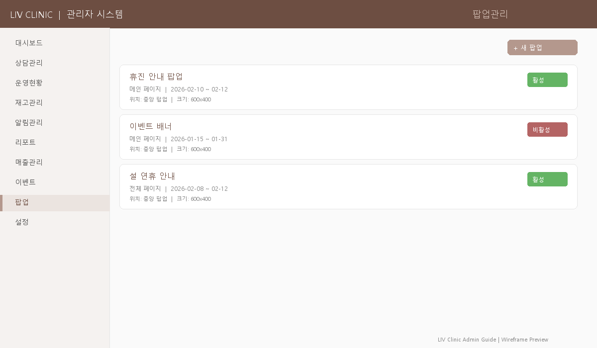
주요 기능
| 기능 | 설명 |
|---|---|
| 팝업 목록 | 검색 가능한 팝업 리스트 |
| 활성 관리 | 팝업 노출/숨김 토글 |
| 팝업 생성 | 제목, 이미지, 링크, 노출 기간, 위치 설정 |
| 편집/삭제 | 기존 팝업 수정 및 삭제 |
사용 시나리오
시나리오 1: 이벤트 팝업 등록
- 새 팝업을 생성합니다.
- 이벤트 포스터 이미지를 업로드합니다.
- 이벤트 페이지 링크를 설정합니다.
- 노출 기간을 설정합니다.
- 활성화하면 홈페이지 접속 시 팝업이 표시됩니다.
시나리오 2: 휴진 안내 팝업
- 새 팝업을 생성합니다.
- 제목: "휴진 안내 (X월 X일 ~ X일)"
- 휴진 안내 이미지를 업로드합니다.
- 링크는 비워두거나 상담 페이지로 설정합니다.
- 노출 기간을 휴진 1주 전 ~ 휴진 종료일로 설정합니다.
- 활성화하면 방문자에게 휴진 안내가 자동으로 표시됩니다.
시나리오 3: 여러 팝업이 동시에 활성화된 경우
- 팝업 목록에서 활성 상태인 팝업을 확인합니다.
- 동시에 여러 팝업이 활성화되면 방문자가 불편할 수 있습니다.
- 우선순위가 낮은 팝업의 활성 토글을 해제합니다.
- 권장: 동시에 1~2개 이하의 팝업만 활성화하세요.
시나리오 4: 이벤트 종료 시 팝업도 함께 비활성화
- 이벤트관리에서 이벤트가 종료되면(종료일 경과 또는 수동 종료)...
- 팝업관리에서 해당 이벤트의 팝업을 찾습니다.
- 활성 토글을 해제하여 팝업을 숨깁니다.
- 또는 팝업을 삭제합니다 (재사용 계획이 없는 경우).
- 끝난 이벤트의 팝업이 계속 노출되지 않도록 주의하세요.
⚙ 설정
/admin/settings시스템 전반의 설정을 관리합니다. 4개 탭으로 구성되어 있습니다.
탭 1: 시술 마스터
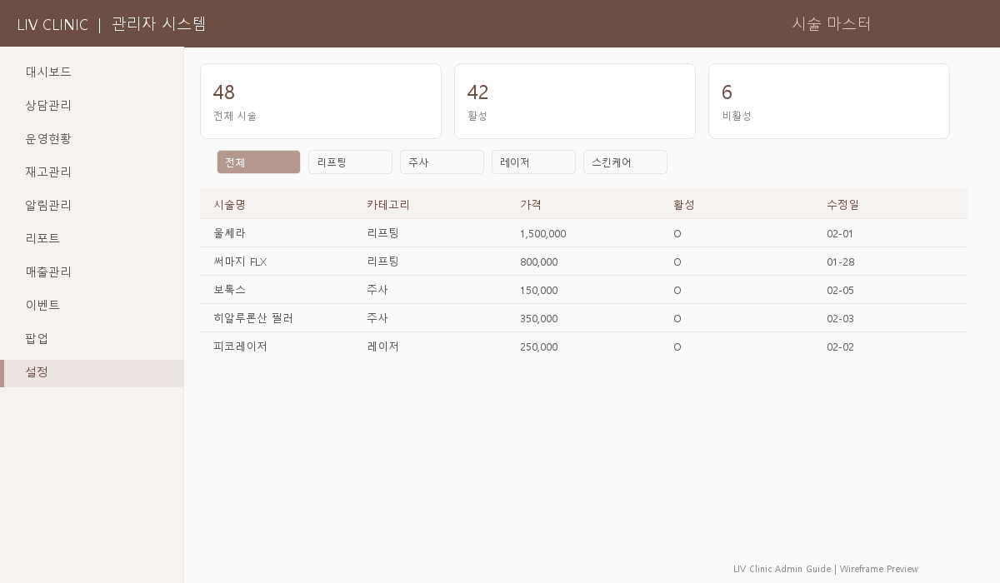
| 기능 | 설명 |
|---|---|
| 시술 목록 | 등록된 모든 시술 항목 (이름, 카테고리, 가격 범위, 소요시간) |
| 시술 추가 | 시술명, 카테고리, 가격 범위, 소요시간, 활성 상태 입력 |
| 카테고리 필터 | lifting, antiaging, laser, skincare 등으로 필터링 |
| 활성/비활성 | 사용하지 않는 시술 비활성화 (운영현황에서 선택지에서 제외) |
시술 마스터가 영향을 주는 곳
- 운영현황: 케이스 등록 시 시술 선택지
- 재고관리: 레시피(시술별 기본 사용 재료) 연동
- 리포트: 시술별 통계/매출 분석
탭 2: 직원 관리
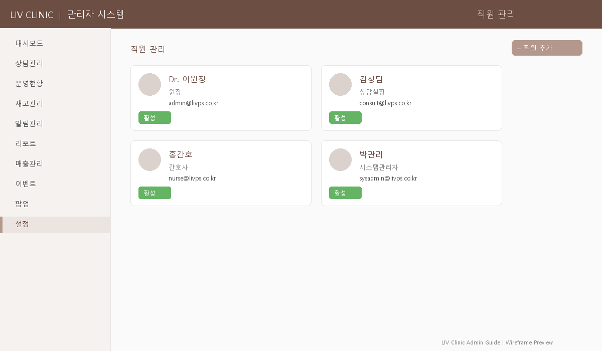
| 기능 | 설명 |
|---|---|
| 직원 목록 | 카드 레이아웃, 전체/활성 인원 통계 |
| 직원 추가 | 이름, 이메일, 역할(admin/doctor/staff), 직위, 활성 상태 |
| 역할 배지 | 관리자 의사 스태프 |
| 활성/비활성 | 퇴사 직원 비활성화 |
탭 3: 감사 로그
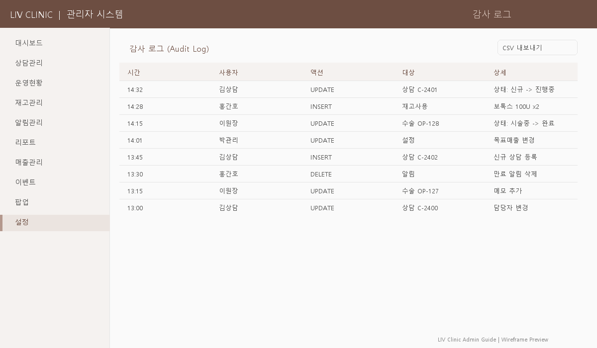
| 기능 | 설명 |
|---|---|
| 활동 로그 | 시간, 사용자, 액션, 대상, 상세 정보 |
| 필터 | 액션(생성/수정/삭제/로그인/내보내기), 사용자, 날짜 범위 |
| CSV 내보내기 | 감사 로그 다운로드 |
탭 4: 기본정보
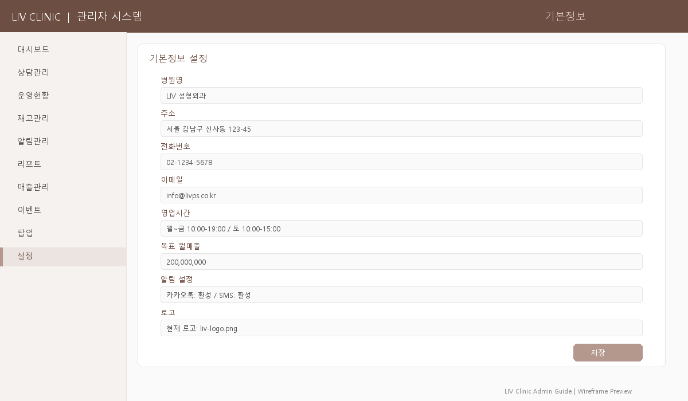
| 기능 | 설명 |
|---|---|
| 병원 정보 | 병원명, 전화번호, 주소, 이메일, 카카오 채널 |
| 영업시간 | 평일, 토요일, 일요일, 점심시간 |
| 알림 설정 | 콜백 리마인더, 재고 부족 알림, 신규 상담 알림 ON/OFF |
| 월 목표매출 | 리포트에서 달성률 계산에 사용되는 기준 금액 |
목표 매출 설정 중요!
리포트의 KPI 카드에서 "목표 달성률 %"는 이곳에서 설정한 월 목표매출을 기준으로 계산됩니다. 매월 초에 목표를 업데이트하세요.
사용 시나리오
시나리오 1: 신규 시술 항목 추가 (시술 마스터 + 재고 연동)
시나리오 2: 직원 입사/퇴사 처리
시나리오 3: 시술 가격 변경
시나리오 4: 감사 로그로 누가 무엇을 변경했는지 확인
- 감사 로그 탭으로 이동합니다.
- 확인하려는 기간을 설정합니다.
- 액션 필터에서 원하는 유형을 선택합니다 (생성/수정/삭제/로그인/내보내기).
- 특정 사용자의 활동만 보려면 사용자 필터를 사용합니다.
- 상세 정보 칼럼에서 변경 전/후 내용을 확인합니다.
- 필요 시 CSV 내보내기로 감사 자료를 보관합니다.
시나리오 5: 매월 초 설정 점검 루틴
- 기본정보 탭에서 월 목표매출을 새 달에 맞게 업데이트합니다.
- 영업시간이 변경되었으면 수정합니다 (예: 공휴일 진료, 토요일 변경).
- 알림 설정을 확인합니다 (콜백 리마인더, 재고 부족, 신규 상담 알림이 켜져 있는지).
- 시술 마스터에서 중단할 시술은 비활성화, 새 시술은 추가합니다.
- 직원 관리에서 인사 변동이 있으면 반영합니다.
시나리오 6: 비정상 접근/활동 의심 시
- 감사 로그 탭으로 이동합니다.
- 액션 필터에서 로그인을 선택합니다.
- 비정상적인 시간대(심야/새벽)의 로그인 이력을 확인합니다.
- 의심스러운 삭제 활동이 있는지 확인합니다.
- 필요 시 해당 계정의 비밀번호를 변경하고, 결과를 CSV로 내보내 보관합니다.
🔄 통합 워크플로우
각 섹션이 어떻게 연결되어 작동하는지 보여주는 통합 워크플로우입니다.
워크플로우 1: 환자 전체 여정 (End-to-End)
워크플로우 2: 이벤트 캠페인 관리
워크플로우 3: 재고-시술 연동
👥 역할별 사용 가이드
업무 역할에 따라 주로 사용하는 메뉴와 일일/주간 루틴을 안내합니다.
주요 메뉴
일일 루틴
- 출근 시 전체 현황 확인 (KPI 카드, 알림 배너)
- 전일 매출 정산 결과 확인
주간/월간 루틴
- 월간 경영 성과 분석, 전월 비교
- 상담 퍼널에서 이탈 구간 파악
- 목표 매출 업데이트 (매월 초)
- 시술 가격/항목 변경 시 시술 마스터 수정
주요 메뉴
일일 루틴
- 오늘 콜백 위젯에서 전화할 환자 확인
- "오늘 콜백만" 토글 → 순서대로 전화
- 신규 탭에서 새 상담 확인 → 담당자 배정
- 음성 메모로 상담 내용 기록
주간 루틴
- CSV 내보내기로 주간 보고 자료 작성
- 진행 중 이벤트 확인 후 상담 시 안내
주요 메뉴
일일 루틴
- 당일 시술 일정 확인 (플로어맵/칸반)
- 시술 전 레시피로 사용 재료 등록
- 시술 진행 → 완료 처리
- 팔로업 대상 환자에게 연락
주간 루틴
- 알림 배너 확인, 부족 항목 발주 요청
- 입고 물품 입고 처리
주요 메뉴
주요 업무
- 시술 항목/가격 변경, 신규 시술 등록
- 직원 입퇴사 처리 (추가/비활성화)
- 시스템 활동 이력 모니터링
- 병원 정보, 영업시간, 알림 설정 관리
💡 향후 개선 사항
현재 구현되어 있지 않지만 향후 추가할 수 있는 기능들입니다.
높은 우선순위
| 기능 | 연관 섹션 | 설명 |
|---|---|---|
| 실시간 알림 | 전체 | WebSocket/SSE로 새 상담 접수, 콜백 리마인더 등 실시간 알림 |
| 카카오톡 API | 알림관리 | 실제 카카오 알림톡 발송 연동 |
| SMS API | 알림관리 | 실제 SMS 발송 연동 |
| 이미지 CDN | 이벤트/팝업 | Supabase Storage 또는 S3 이미지 업로드 |
| 상담 폼 연동 | 상담관리 | 홈페이지 상담 폼 제출 → 자동 상담 등록 |
중간 우선순위
| 기능 | 연관 섹션 | 설명 |
|---|---|---|
| 전후 사진 관리 | 운영/갤러리 | 시술 결과 사진 업로드 및 갤러리 연동 |
| 재고 자동 발주 | 재고관리 | 최소 수량 도달 시 공급업체에 자동 알림 |
| 예약 캘린더 | 운영현황 | 달력 뷰로 일/주/월 예약 현황 |
| 의사 스케줄 | 운영/설정 | 의사별 근무/휴무 스케줄 관리 |
| 환자 CRM | 상담관리 | 환자별 상담/시술/결제 통합 이력 |
낮은 우선순위
| 기능 | 연관 섹션 | 설명 |
|---|---|---|
| 엑셀 가져오기 | 재고/상담 | 대량 데이터 일괄 등록 |
| 대시보드 커스텀 | 대시보드 | 위젯 추가/제거/재배치 |
| 다중 지점 | 전체 | 여러 지점 데이터 분리 관리 |
| 알림 자동화 | 알림관리 | 조건 기반 자동 알림 규칙 설정 |
| 네이버 예약 | 상담관리 | 네이버 예약 데이터 자동 동기화 |
🔌 API 참조
관리자 시스템에서 사용하는 28개 API 엔드포인트 목록입니다. (개발자/시스템 관리자용)
| 카테고리 | 엔드포인트 | 메서드 | 설명 |
|---|---|---|---|
| 이벤트 | /api/admin/events | GET, POST | 목록/생성 |
/api/admin/events/[id] | PATCH, DELETE | 수정/삭제 | |
| 팝업 | /api/admin/popups | GET, POST | 목록/생성 |
/api/admin/popups/[id] | PATCH, DELETE | 수정/삭제 | |
| 운영 | /api/admin/operations | GET, POST | 목록/생성 |
/api/admin/operations/[id] | PATCH, DELETE | 수정/삭제 | |
| 재고 | /api/admin/inventory | GET, POST | 목록/생성 |
/api/admin/inventory/[id] | PATCH, DELETE | 수정/삭제 | |
/api/admin/inventory/use | POST | 사용 등록 (RPC) | |
/api/admin/inventory/restock | POST | 입고 등록 | |
/api/admin/inventory/transactions | GET | 거래 이력 | |
/api/admin/inventory/stats | GET | 재고 통계 | |
/api/admin/inventory/recipes | GET | 시술 레시피 | |
| 알림 | /api/admin/notifications/today | GET | 오늘 발송 대상 |
/api/admin/notifications/complete | POST | 발송/스킵 처리 | |
/api/admin/notifications/history | GET | 발송 이력 | |
/api/admin/notification-templates | GET, POST | 템플릿 관리 | |
/api/admin/notification-templates/[id] | PATCH, DELETE | 템플릿 수정/삭제 | |
| 환자치료 | /api/admin/patient-treatments | GET, POST | 목록/생성 |
/api/admin/patient-treatments/[id] | PATCH, DELETE | 수정/삭제 | |
| 리포트 | /api/admin/reports | GET | 월간 리포트 |
| 매출 | /api/admin/revenue | GET | 매출 데이터 |
| 설정 | /api/admin/settings/clinic | GET, PUT | 병원 정보 |
/api/admin/settings/treatments | GET, POST | 시술 마스터 | |
/api/admin/settings/treatments/[id] | PATCH, DELETE | 시술 수정/삭제 | |
/api/admin/settings/staff | GET, POST | 직원 관리 | |
/api/admin/settings/staff/[id] | PATCH, DELETE | 직원 수정/삭제 | |
/api/admin/settings/audit-logs | GET | 감사 로그 |
LIV CLINIC — 관리자 시스템 사용 설명서
v1.0 · 2026-02-08 · LIV Plastic Surgery